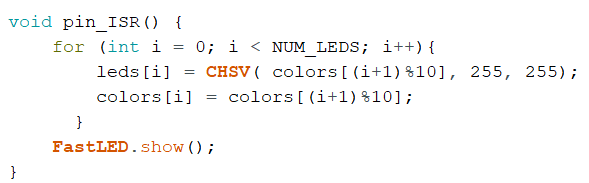

This week we explore interrupts, which allows us to bypass main loop code when a physical stimulus or timer is activated, enabling much more efficient and reliable code when executed properly. I spent some time working with interrupts in high school when building an electric vehicle, namely for recording how far the vehicle has travelled using rotary encoders. Interrupts are imperative for quadrature encoders which follow a specific pattern of signals which tell us when we have travelled each tick. A brief rundown of how the encoders work is shown on the left.
For this week, I decided to explore the LED strip since I haven't worked with it before. After doing some research I found that a great library for our 3-pin pwm LED strip is fastLED. After installing the library, I tested out the code on one light and later expanded it to light up all 10 LEDs on the strip with different colors. After successfully lighting up the LEDs to different colors, I initiated the LED values to create a rainbow gradient by changing the "hue" value for each - the code for this is shown on the right. I then made the LED strip animated by shifting the values of each light to create a moving rainbow effect, which we can see on the gif below.
After successfully lighting up the LED strip and getting it to show a rainbow, I decided to attach a button for input. For simplicty, I started without using an interrupt and simply using delays to make the button shift the rainbow whenever it is pressed. The resulting button-triggered animation is shown below, with the rainbow shifting when the button is pressed. The code for the button-triggered rainbow LED strip animation is straight forward, shown on the right.
Finally, I set out to integrate interrupts into the project. I decided to design the device to shift the rainbow by one led every time the button is either pressed or released, and put the previous code into an interrupt change function, as seen in the code on the right. As a result we got a successfully shifting LED strip triggered by interrupts. Unfortunately, I quickly began running into issues. Namely, after rapidly pressing the button for 10 or so seconds, the rainbow on the strip would stop moving, and the arduino would basically freeze until it was forcibly restarted. The interrupt shifting strip is shown below, as well as how it freezes after working for a number of cycles.

After trying a number of options without succeeding to shift it more than 10-15 places before the freeze, I figured out that it was due to the PWM interraction, which I have had a lot of experience with through quadrature encoders. When I built my electric vehicle, I would control a brushless motor with an ESC (electronic speed controller) which took in a PWM signal. The vehicle was coded to speed up, go for some distance, then slow down and come to a stop. However, sometimes the vehicle would just speed up indefinitely and never slow down. After much pain and many broken cars I figured out it was due to the interrupts on the encoder being triggered as the microcontroller is sending PWM signals to the ESC, causing the signal to be distorted and potentially have the quadrature interrupts even come into resonance with the PWM signal, scewing the signal the ESC receives.
Here we could have a similar effect, since the microcontroller uses PWM to send signals to the LED strip. Perhaps an interrupt from the button press is activated during a signaling event built into the fastLED library, and it creates some unexpeted interaction which leads to a freeze or a while true loop of some sort.